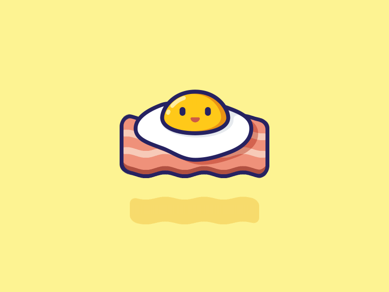

Готовим яйцо... 🥚💜
Выбери степень готовности 🥚

Всмятку (3 мин)

В мешочек (5 мин)

Вкрутую (8 мин)
00:00

Интересные факты и рецепты 🥚
Факты:
- Яйца — полный белок, содержащий все аминокислоты.
- Цвет скорлупы зависит от породы курицы (белые или коричневые — одинаково полезны).
- Самое большое яйцо в мире — 23 см в диаметре, снесено в 2010 году.
- Яйца помогают усваивать витамины из овощей лучше.
- В яйце желток — это одна огромная клетка!
Простые рецепты:
- Яичница: Разбей 2 яйца на сковороду, жарь 3 мин. Добавь соль.
- Омлет: Взбей 2 яйца с молоком, жарь с овощами 5 мин.
- Пашот: В кипящую воду с уксусом разбей яйцо, вари 3 мин.
- Девилд яйца: Свари вкрутую, разрежь, смешай желток с майонезом и специями.